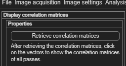
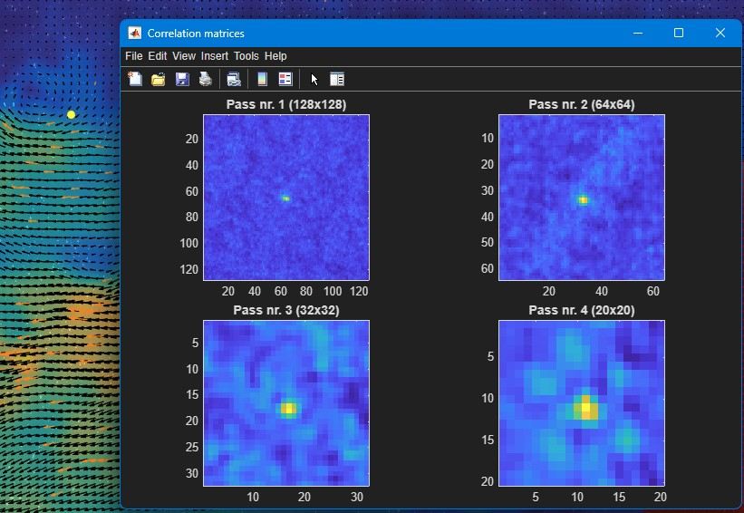

Correlation matrices
A diagnostic tool for looking under the hood of a single vector — the raw correlation surface that produced it, for every pass.
Open via Plot → Correlation matrices.

- Click Retrieve correlation matrices to compute them for the currently displayed frame.
- Click on any vector in the plot to display the correlation matrices of all passes for that specific vector.

What the surface looks like tells you why a vector turned out the way it did:
| Peak shape | Meaning |
|---|---|
| Sharp, single, dominant peak | A reliable match — this is what you want to see. |
| Multiple competing peaks of similar height | An ambiguous match — the correlation can't clearly tell which displacement is correct. |
| Broad, flat peak | Poor accuracy — the location is only loosely determined. |
| Noisy surface with no clear peak | Too few particles or poor image quality in that interrogation area. |
When this is useful
This explains why a particular vector looks wrong or got flagged during
validation — useful for understanding, not just
seeing, a bad result.